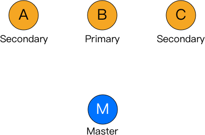
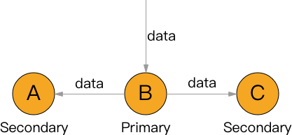

在 primary-secondary 类型的协议中，副本被分为两大类，其中有且仅有一个副本作为 primary 副本， 除 primary 以外的副本都作为 secondary 副本。维护 primary 副本的节点作为中心节点，中心节点负责维护数据的更新、并发控制、协调副本的一致性。
就是像这样的，有个Master节点负责协调谁是Primary，谁是Secondary。

写
写入时：
- 先通过某种方式（一般是询问Master）获取数据Primary副本的位置
- 向Primary写入数据
- Primary向自己对应的Secondary写数据
- Primary根据Secondary的返回情况，返回是否写入成功

其中Primary负责决定多个请求同时到来时写入数据的顺序。
读
读取时，可以：
从任意副本读，只保证最终一致性
只从Primary读，保证强一致性，但增大Primary的压力
为了解决这个问题，可以：
把不同数据的Primary分布到不同节点上，如果数据访问是均匀的，那么压力也是平均分配到多个节点上的。
允许从任意“可用”的副本读：写入时，如果某个Secondary没有返回写入成功，则将这个Secondary标记为不可用，将Secondary是否可用存储在某个中心服务器上，如Master或Primary上，读取时需要先请求哪个Secondary可用。这降低了系统的可用性（A）。
Primary的确定与切换
一开始的Primary比较容易确定：Master钦定一个就好了，用哈希用轮换都可以。
关键问题在于Primary挂掉1的时候如何切换到新的Primary。
如何确定Primary挂掉，请见下面的Lease机制等章节。
如何在Primary挂掉时选择新的Primary，请见下面的Quorum 机制等章节。
Secondary的故障恢复
最简单粗暴的方法是直接当作新的节点，全部从Primary拷贝一份。
另外可以通过日志技术，回放Primary的操作日志中最后一次checkpoint之后的部分就可以达到相同的状态。
对于脏数据，即在本Secondary上已经写入成功，但Primary决定向用户返回写入失败，此时留在本机上的数据是无效的，这就是脏数据。解决这一问题的一个方法是让Primary告知Secondary是否写入成功，一定时间内如果没有告知或被告知写入失败，就丢弃这份数据，当然也有部分产品不对脏数据进行处理。